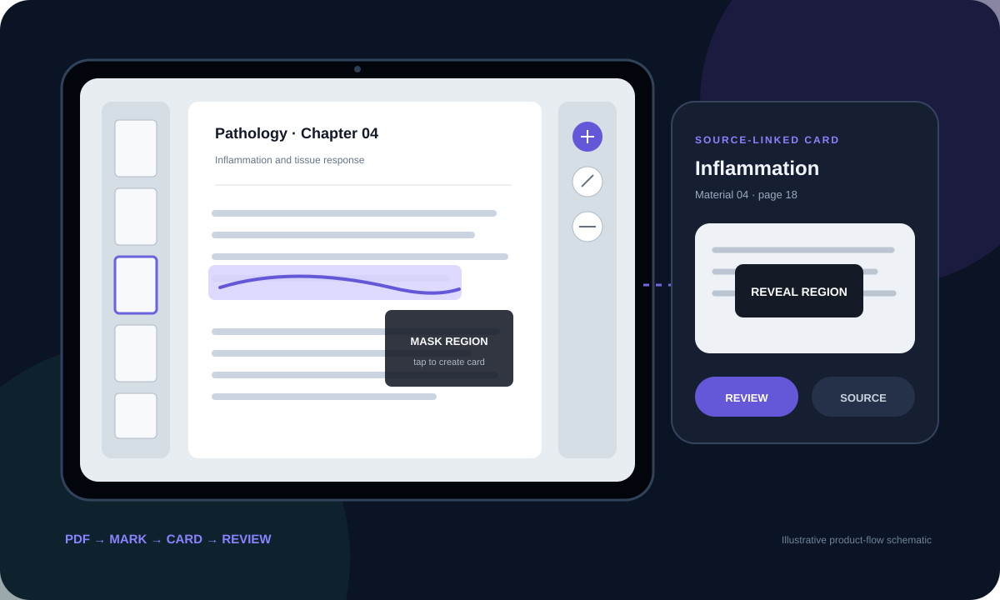
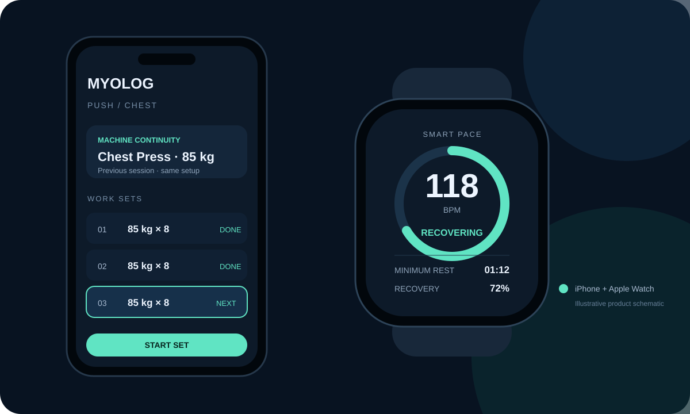
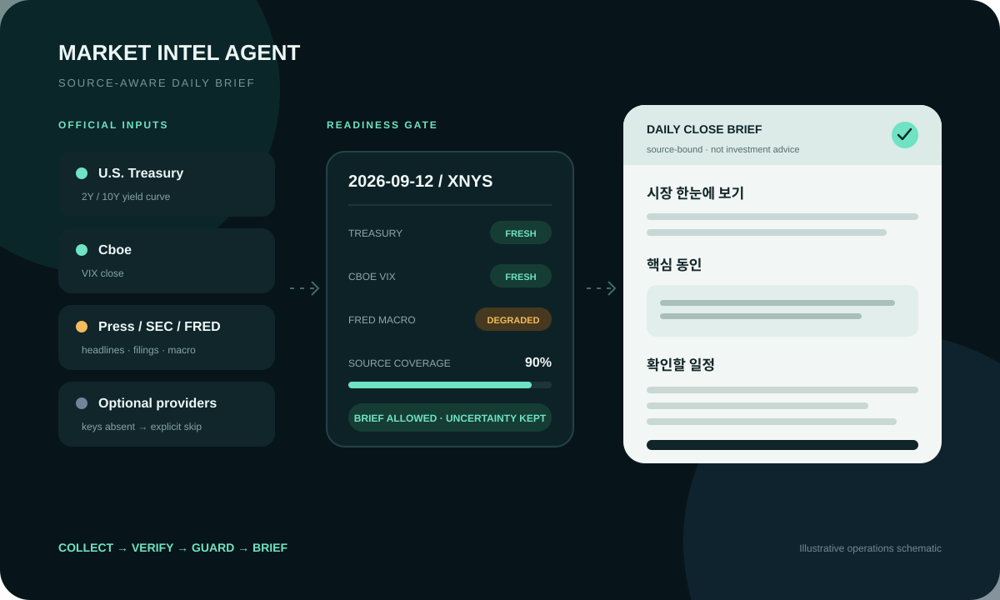
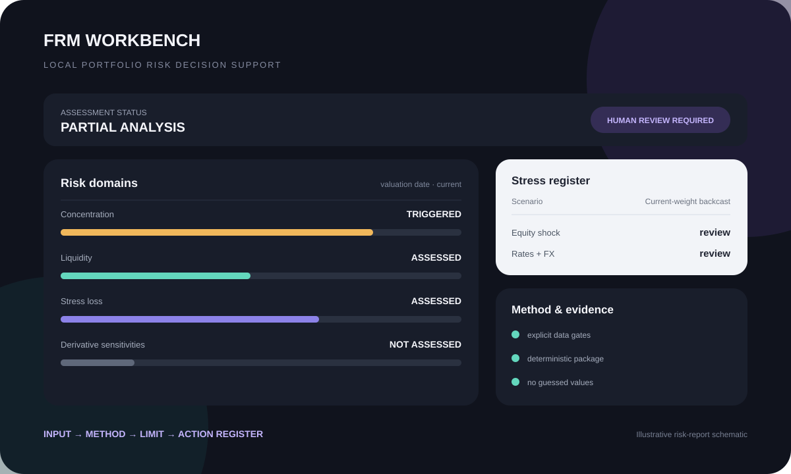
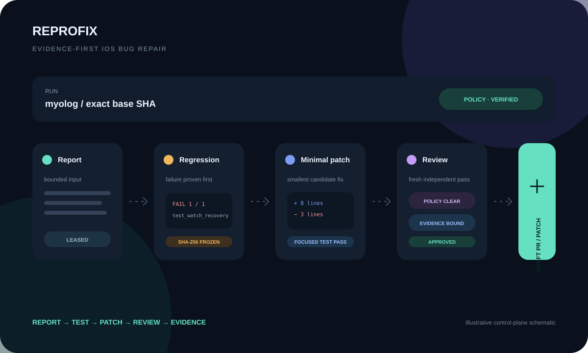
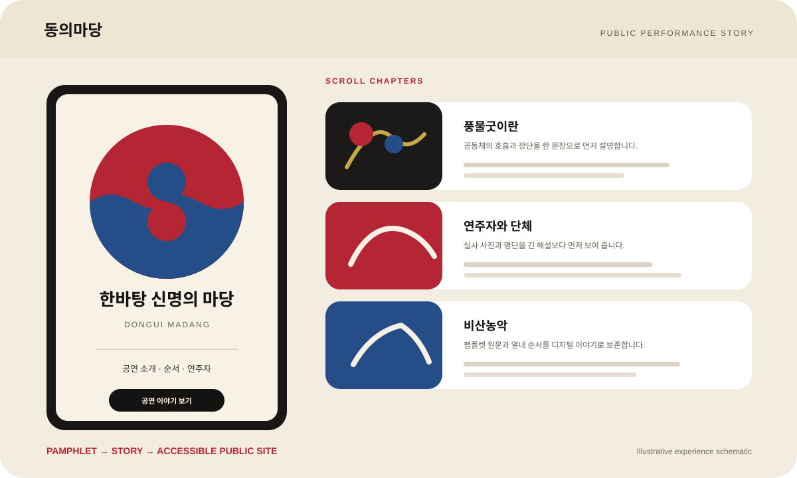

소개
저는 대구한의대학교 한의과대학 본과 1학년 으로,
의료 도메인을 공부하면서 직접 겪는 문제를 소프트웨어로 해결하고 있습니다.
운동 기록의 단절, PDF 학습과 복습의 분리, 시장 정보 과잉처럼 반복되는 마찰을 발견하면
실제로 쓸 수 있는 시스템으로 바꿉니다.
작업 범위는 화면 구현에 그치지 않습니다. 로컬 우선 데이터 구조, 실패 시 동작,
마이그레이션, 실기기 검증, TestFlight 제출, 재현 가능한 증거 패키지까지
제품의 일부로 설계합니다.
장기적으로는 한의사 면허를 전문성의 기반으로 삼되,
헬스케어 제품과 회사를 만드는 사업가 를 목표로 합니다.
개발과 투자는 그 목표를 실행하고 리스크를 통제하기 위한 도구입니다.
현재 대구한의대학교 한의과대학 본과 1학년
만드는 것 Pendeck(펜덱) · iPad PDF 필기·플래시카드 앱
자격 금융투자분석사 · 투자자산운용사
주요 플랫폼 iOS · watchOS · iPadOS · Web · Local systems
작업 원칙 Local-first · fail-closed · evidence-first
문제를 직접 겪은 장면에서 시작합니다.
안전·개인정보·데이터 경계를 기능보다 먼저 고정합니다.
자동 테스트와 실제 기기 증거를 구분해 남깁니다.
완성도를 높이되 제품 상태를 과장하지 않습니다.

학습 흐름 개념도 · 실제 앱 화면 캡처가 아닙니다.
Pendeck
공부하다 바로 플래시카드 만들기. iPad에서 PDF에 필기하다 그 자리에서 가림 카드를 만들고,
복습하고, 원문으로 돌아가는 학습 앱입니다.
PDFKit 위에 PencilKit 잉크와 마스크를 결합하고, 모든 표시와 카드를 안정적인 UUID로 추적합니다.
무거운 PDF·그림 데이터와 가벼운 메타데이터를 분리해 로컬 우선과 복구 가능성을 지킵니다.
계정 없이 오프라인으로 동작하고, 데이터는 iPad 안에 둡니다.
PDF → 표시 → 카드 → 복습의 단일 루프
Stable ID · versioned schema · heavy/light split
Apple Pencil · text selection · in-app review
SwiftUI PDFKit PencilKit SwiftData SM-2

기능 개념도 · 실제 앱 화면 캡처가 아닙니다.
Myolog
머신이 바뀌어도 수행 기록을 이어 주고, Apple Watch 심박으로 다음 세트 타이밍을 안내하는
중급자용 웨이트 기록 앱입니다.
실제 머신·제품 라인·헬스장 인스턴스를 구분하고, 과거 수행과 사용자 보정을 근거로
보수적인 시작 범위를 제시합니다. 계정과 자체 백엔드 없이 로컬 데이터를 우선합니다.
24개 브랜드 · 81개 제품 라인
169개 운동 · 709개 머신
iPhone · Apple Watch · Smart Pace
SwiftUI SwiftData HealthKit WatchConnectivity XCTest

운영 개념도 · 실제 서비스 화면 캡처가 아닙니다.
Market Intel Agent
미국 시장 데이터를 공식·무료 원천에서 수집하고,
출처와 신선도, 불확실성을 보존한 한국어 브리프로 구조화합니다.
숫자를 모델이 만들지 않으며, 투자 조언처럼 읽히는 출력은 전송 전에 차단합니다.
중복 전송, 사실 정정, 원천 누락과 degraded 상태를 명시적으로 관리합니다.
공식 원천 중심 수집과 SQLite 증거 보존
freshness · provenance · guardrail gate
idempotent delivery · correction chain
Python SQLite Telegram Deterministic pipeline

리스크 보고 개념도 · 실제 개인 포트폴리오 데이터가 아닙니다.
FRM Workbench
수익률을 예측하거나 매매를 지시하지 않고,
포트폴리오 리스크를 구조화하는 로컬 의사결정 지원 도구입니다.
스트레스, 집중도, 유동성, 한도와 모델 위험을 명시적 방법론으로 계산하며,
입력이 부족한 영역은 추정으로 채우지 않고 미평가 상태로 남깁니다.
명시적 데이터 게이트와 방법론
결정론적 증거 패키지와 재수행 검증
불완전 입력에 대한 fail-closed 처리
Python Risk methods Deterministic evidence Local web

제어면 개념도 · 실제 고객 실행 데이터가 아닙니다.
ReproFix
버그를 바로 고치는 대신, 먼저 실패를 증명하고 수정 증거를 동결하는
iOS 결함 수리 제어면입니다.
정확한 base SHA에서 새 회귀 테스트로 보고 관련 실패를 재현하고,
최소 수정과 독립 리뷰를 거쳐 Draft PR 또는 로컬 patch bundle만 만듭니다.
병합·배포·TestFlight 제출은 수행하지 않습니다.
exact base SHA lease와 frozen regression test
deterministic policy · independent review
Draft PR 또는 patch bundle로만 종료
Next.js Node.js PostgreSQL GitHub App Xcode worker

경험 개념도 · 공개 사이트의 구조를 요약했습니다.
동의마당 공연 사이트
인쇄 팸플렛의 공연 설명과 사진을 모바일 중심의 스크롤 스토리로 재구성한 공개 웹사이트입니다.
Astro 정적 빌드, GSAP 모션, PDF 자산 최적화, Playwright·axe 회귀검증을 결합했습니다.
JavaScript가 실패하거나 모션을 줄여도 전체 콘텐츠와 조작 순서가 유지됩니다.
Chromium·WebKit 44개 회귀 검사
모션 감소 · 200% 텍스트 · 다중 뷰포트 검증
PDF provenance와 AVIF·WebP 최적화
Astro TypeScript GSAP Playwright axe-core
학력·자격
서로 다른 훈련을 하나의 판단 체계로 사용합니다.
의료 도메인은 안전 경계를, 금융 자격은 불확실성과 리스크 통제를,
제품 개발은 실제 전달 능력을 강화합니다.
현재
대구한의대학교 한의과대학
본과 1학년 재학. 의료 지식과 실제 학습·진료 맥락을 제품 판단의 기반으로 사용합니다.
자격
금융투자분석사
시장과 기업을 구조적으로 해석하고, 투자 판단의 가정과 한계를 구분하는 분석 기반입니다.
자격
투자자산운용사
운용, 상품, 규제와 위험관리의 실무 지식을 개인 금융 시스템 설계에 적용합니다.
제품
Apple Developer Program
iPhone·Apple Watch 제품의 서명, archive, App Store Connect, 내부·외부 TestFlight 흐름을 직접 운영했습니다.
실제로 연결해 본 기술 범위
Apple products Swift · SwiftUI · SwiftData · watchOS · HealthKit · WatchConnectivity
Study & vision PDFKit · PencilKit · Vision · AVFoundation · local-first persistence
Web & services TypeScript · Next.js · Astro · React · FastAPI · semantic HTML/CSS
Data & risk Python · SQLite · PostgreSQL · source lineage · deterministic methods
Verification XCTest · Playwright · axe-core · migrations · physical-device evidence · TestFlight
전체
건강
학습
금융
웹
도구
2026 Myolog 웨이트 기록 · iPhone/Watch TestFlight 제출 머신별 연속성과 Apple Watch 심박 기반 휴식을 결합한 중급자용 운동 기록 앱.
SwiftUI SwiftData HealthKit
2026 Pendeck PDF 필기·플래시카드 · iPadOS 출시 준비 중 PDF 공부, 필기·마스크, 카드 생성과 복습을 하나의 로컬 우선 루프로 연결합니다.
2026 BodyMap 비진단 증상 탐색 프로토타입 결정론적 red-flag gate와 구조화 지식베이스를 사용하는 증상 감별지원 도구.
Next.js TypeScript Clinical rules
2026 Prelog 신체 변화 관찰 · iOS 공모전 MVP 온디바이스 영상과 생활 기록으로 비의료 신체 변화 신호를 개인 기준선과 비교합니다.
2026 Prelog Commercial 사업화·제품 경계 비공개 트랙 Prelog의 사업화, 검증 범위와 공개 제품 경계를 독립적으로 다루는 비공개 트랙.
Product strategy Validation
2026 FRM Workbench 포트폴리오 리스크 로컬 도구 스트레스, 집중도, 유동성, 한도와 모델 위험을 구조화하는 의사결정 지원 도구.
Python Risk methods Evidence package
2026 Market Intel Agent 시장 정보 브리프 검증 중 출처와 신선도를 보존하면서 미국 시장 정보를 수집·구조화·전달합니다.
2026 QuantLab Regime · 추세 · PWA 동결 시스템 개인 포트폴리오의 비중, 추세, 상대강도와 regime 행동 규칙을 계산합니다. 자동매매는 하지 않습니다.
2026 Personal Investment Tool FRM·MIA·Quant 통합 보존 세 시스템을 검증 가능한 packet 경계로 연결하고 합성 입력 PWA와 불변 증거 이력을 구현한 통합 허브.
Python React Integrity kernel
2026 Anatomy Agent 교재 재구성 자동화 개발 중 스캔 해부학 PDF를 구조화된 A4 학습교재로 재구성하고 자동 검수하는 파이프라인.
2026 Limbicue 간격 반복 엔진 비공개 FSRS 기반 간격 반복 플래시카드 엔진. 학습 흐름 일부는 Pendeck으로 이어졌습니다.
2026 Herb Exam 본초 감별 학습 공개 약재 사진 감별 시험을 위한 정적 학습 웹앱과 로컬 진도·백업 흐름.
GitHub 열기
2026 GNC2 iPadOS 검증 작업공간 비공개 교육용 iPadOS 인터페이스를 명세와 동작 증거를 기준으로 검증하는 작업공간.
2026 Dongui Madang 공연 스크롤 스토리 공개 풍물 공연 팸플렛을 반응형 스크롤 스토리와 접근 가능한 공개 사이트로 전환했습니다.
공개 사이트 열기
2026 Myolog Legal 개인정보·지원 문서 공개 Myolog의 개인정보 처리방침과 공개 지원 문서를 제품 소스와 분리한 저장소.
GitHub 열기
2026 Pickup Optimizer 멀티모달 픽업 최적화 MVP 운전자 부담, 승객 편의, 도착시간과 형평성을 함께 평가해 Top 3 픽업안을 제시합니다.
Python FastAPI Optimization
2026 ReproFix iOS 결함 수리 제어면 개발 중 회귀 테스트로 실패를 증명하고 최소 수정과 독립 리뷰를 증거로 묶습니다.
2026 Risewell Cleanroom 알람 앱 독립 재구성 검증 프로토타입 알람과 기상 과제를 결합한 iOS 앱을 관찰→명세→SwiftUI 구현→테스트 순서로 독립 재구성했습니다.
SwiftUI Clean-room Validation
2026 Yakkseongga 한의학 학습 실험 초기 공개 한의학 학습 콘텐츠를 위한 공개 실험 저장소. 현재 초기 상태입니다.
Learning Public repository GitHub 열기
2026 Personal Website 개인 소개·작업 기록 현재 학력, 자격, 대표 시스템과 전체 작업을 하나의 읽기 쉬운 공개 포트폴리오로 구성한 이 사이트.